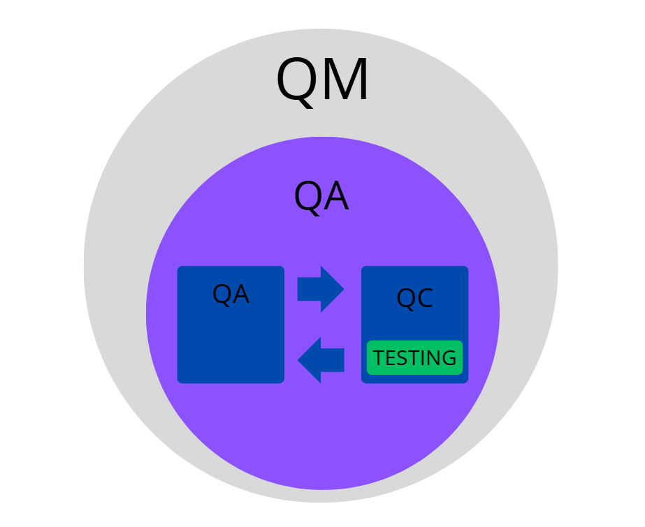
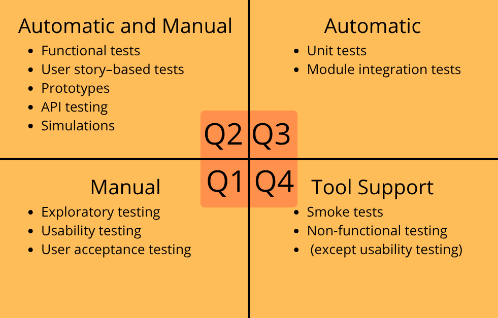

QM, QA i QC¶
QM (Quality Management) - system zarządzania jakością w organizacji obejmujący politykę jakości, cele jakościowe, procesy, nadzór oraz ciągłe doskonalenie, w celu zapewnienia zgodności produktów lub usług z wymaganiami klienta i normami. Obejmuje QA i QC.
QA (Quality Assurance) - działania związane z zapewnieniem jakości, poprzez tworzenie i nadzorowanie procesów, procedur oraz standardów mających zapobiegać powstawaniu błędów.
QC (Quality Control) - działania związane z kontrolą i oceną jakości produktu, usługi, modułu lub systemu.
W ujęciu teoretycznym QC jest częścią QA, jednak w praktyce organizacyjnej QA i QC często funkcjonują jako niezależne obszary.

Rys 1. Relacja między QM, QA, QC i testowaniem.
Czym jest testowanie?¶
Testowanie - proces oceny jakości oprogramowania i powiązanych artefaktów poprzez wykrywanie defektów oraz weryfikację, czy system spełnia określone wymagania.
Testowanie vs debugowanie¶
Testowanie - proces sprawdzania działania programu i wykrywania błędów. Wykonuje je głównie tester poprzez uruchamianie testów i porównywanie wyniku oczekiwanego z rzeczywistym.
Debugowanie - proces analizowania przyczyny błędu i jego naprawy. Wykonuje je głównie programista po otrzymaniu raportu defektu.
Cele testowania¶
- Budowanie zaufania do jakości produktu.
- Zapobieganie awariom, dzięki wczesnemu wykrywaniu niezgodności w procesie wytwarzania (obejmuje ocenę i weryfikację produktów pracy, takich jak wymagania, projekt i kod, a także sprawdzenie spełnienia zobowiązań wynikających z umów, standardów, prawa i oczekiwań interesariuszy).
- Sprawdzenie kompletności przedmiotu testów.
Błąd, defekt i awaria¶
Błąd (error) - pomyłka człowieka prowadząca do powstania defektu w kodzie.
Defekt (defect/bug) - nieprawidłowość w kodzie lub działaniu programu.
Awaria (failure) - efekt działania defektu w czasie wykonania (zdarzenie, w którym moduł lub system nie wykonuje wymaganej funkcji w określonym zakresie).
Zasady testowania¶
- Testowanie ujawnia obecność błędów, nie ich brak.
- Pełne testowanie jest niemożliwe.
- Wczesne testowanie oszczędza czas i koszty.
- Defekty koncentrują się w określonych obszarach systemu.
- Paradoks pestycydów - te same testy przestają wykrywać nowe błędy, trzeba je regularnie aktualizować.
- Testowanie zależy od kontekstu (np. testy systemów medycznych różnią się od testów gier).
- Brak błędów nie oznacza, że system jest użyteczny lub spełnia potrzeby użytkownika.
Wybrane modele cyklu życia oprogramowania¶
Sekwencyjne - zakładają wykonanie poszczególnych czynności wytwórczych po kolei liniowo. Kolejna faza rozpoczyna się po zakończeniu poprzedniej.
-
Kaskadowy (waterfall) - czynności testowe startują, gdy wszystkie inne czynności wytwórcze zostaną ukończone. Model ten jest stosowany, dla produktów posiadających dokładną dokumentacje i dobrze zdefiniowane wymagania (o niskim prawdopodobieństwie wystąpienia zmiany).
-
Model V - w przeciwieństwie do kaskadowego wprowadza zasadę wczesnego testowania. Każdemu etapowi wytwarzania odpowiada powiązany etap testowania.
Iteracyjno-przyrostowe - oprogramowanie wytwarzane jest w krótkich cyklach, a funkcjonalności rosną przyrostowo.
-
SCRUM - jedna z najpopularniejszych metodyk. Dzieli wytwarzanie oprogramowania na krótkie iteracje (sprinty) o tej samej długości. Częste zmiany. Dlatego testowanie staje się wyzwaniem, więc zamiast długotrwałego planowania stosuje się testowanie eksploracyjne, czy automatyzowanie dużych ilości testów, zwłaszcza testów regresji.
-
Kanban - nie narzuca stałych iteracji czasowych. Proces wytwórczy organizowany jest w oparciu o wizualne karty zadań na tablicy oraz limity pracy w toku (WIP). Kolejne funkcjonalności przekazywane są do produkcji w miarę ich ukończenia, gdy pojawi się na nie zapotrzebowanie. Metoda ta kładzie nacisk na płynność przepływu, szybkie wykrywanie wąskich gardeł i elastyczne reagowanie na zmiany priorytetów.
-
Model spiralny Boehma - nazywany jest modelem modeli, ponieważ można z niego uzyskać każdy model cyklu życia. Każda iteracja rozpoczyna się analizą ryzyka. Tworzy się w nim eksperymentalne elementy przyrostowe, które mogą być przebudowane, a nawet porzucone w dalszych etapach.
-
RUP - iteracyjny model wytwarzania oparty na fazach i przypadkach użycia. Proces może być dostosowywany do potrzeb projektu, a rozwój systemu odbywa się iteracyjnie.
Zasada Shift Left¶
Zasada Shift Left - podejście polegające na przesunięciu testowania na wcześniejsze etapy wytwarzania oprogramowania, aby szybciej wykrywać i usuwać błędy oraz obniżyć koszty ich naprawy.
Proces testowy¶
- Planowanie testów -> plan testów (cel, podejście, techniki, harmonogram)
- Monitorowanie testów -> raporty z testów (oszacowanie jakości modułu na podstawie rezultatów, czy konieczne dalsze testy, sprawdzenie rezultatów)
- Analiza testów -> warunki testowe (analiza specyfikacji, diagramów, wymagań)
- Projektowanie testów -> przypadki testowe, zbiory testów
- Implementacja testów -> tworzenie zestawów testowych, przygotowanie danych testowych
- Wykonywanie testów -> dokumentacja (wykonanie testów), raport o defektach
- Ukończenie testów -> koniec
Poziomy testów¶
- Testy jednostkowe/modułowe (Unit tests) - testują małe fragmenty kodu, wykonywane głównie przez programistów.
- Testy integracyjne - sprawdzają współpracę między modułami lub systemami.
- Testy systemowe - obejmują testy całej aplikacji jako całości.
- Testy akceptacyjne - potwierdzają, że system spełnia potrzeby użytkowników, klienta oraz wymagania biznesowe. Wyróżnia się m.in.:
- UAT (User Acceptance Testing) - testy akceptacyjne użytkownika wykonywane przez użytkowników końcowych. Sprawdzają, czy system odpowiada rzeczywistym potrzebom i scenariuszom użycia.
- OAT (Operational Acceptance Testing) - operacyjne testy akceptacyjne wykonywane przez administratorów lub operatorów systemu. Koncentrują się na utrzymaniu systemu, np. bezpieczeństwie, kopiach zapasowych czy odzyskiwaniu po awarii.
- Testowanie zgodności - sprawdza zgodność systemu z umowami, normami lub przepisami prawa.
- Alfa - wykonywane w środowisku producenta przez testerów, potencjalnych klientów lub niezależny zespół testowy.
- Beta - wykonywane przez użytkowników lub klientów w rzeczywistym środowisku docelowym, poza siedzibą producenta.
Rodzaje testów¶
Ze względu, czy kod jest uruchamiany w trakcie testu:
- Statyczne - testowanie można wykonać bez konieczności uruchamiania testowanego obiektu (testowane specyfikacje, projekt architektury czy kod oprogramowania).
- Dynamiczne - testowanie może wymagać uruchomionego modułu lub systemu.
Ze względu na cel:
- Funkcjonalne - sprawdzenie, czy system działa zgodnie z wymaganiami (konkretne funkcjonalności).
- Niefunkcjonalne - badanie sposobu działania systemu (jakość, wydajność, bezpieczeństwo, użyteczność).
Ze względu na podejście:
- Czarnoskrzynkowe (Black-box) - tester nie zna kodu, testuje na podstawie specyfikacji i interfejsu użytkownika.
- Białoskrzynkowe (White-box) - tester zna strukturę kodu i testuje jego wewnętrzną logikę.
- Bazujące na doświadczeniu - nie bazują na dokumencie formalnym.
Ze względu na sposób wykonania:
- Manualne - tester wykonuje testy ręcznie, krok po kroku, bez użycia skryptów. Stosowane głównie dla testów eksploracyjnych, UX, walidacji funkcjonalności.
- Automatyczne - testy wykonywane są przez skrypty lub narzędzia (np. Selenium, Postman, Jenkins). Stosowane przy testach regresyjnych i powtarzalnych.
Testy związane ze zmianami:
- Potwierdzające - retesty stosuje się je zawsze po naprawie defektu. Sprawdzenie, czy defekt został rzeczywiście naprawiony.
- Regresyjne - upewniają się, że nowa zmiana nie zepsuła istniejących funkcji. Często się je automatyzuje.
Inne typy testów:
- Smoke tests - szybka weryfikacja, czy aplikacja działa po wdrożeniu. Sprawdzenie, czy główne funkcje działają (czy "się uruchamia").
- Sanity tests - sprawdzenie, czy konkretna poprawka działa zgodnie z oczekiwaniami.
- Eksploracyjne - tester spontanicznie bada aplikację bez gotowych przypadków testowych, szukając nieoczywistych błędów.
- Pielęgnacyjne - testy po wydaniu oprogramowania do użytku.
Testowanie instrukcji i gałęzi¶
Testowanie instrukcji i pokrycie instrukcji kodu - sprawdza, czy każda instrukcja kodu została wykonana przynajmniej raz podczas testów. Pomaga wykryć fragmenty kodu, które nie były testowane. Pokrycie instrukcji określa procent sprawdzonych instrukcji kodu.
Testowanie gałęzi i pokrycie gałęzi - sprawdza wszystkie możliwe wyniki decyzji w kodzie, aby upewnić się, że każda ścieżka została wykonana. Pomaga wykrywać błędy logiczne. Pokrycie gałęzi określa procent gałęzi sprawdzonych podczas testów.
- 100% pokrycia gałęzi gwarantuje 100% pokrycia instrukcji, ponieważ wykonane zostają wszystkie ścieżki kodu.
- 100% pokrycia instrukcji nie gwarantuje 100% pokrycia gałęzi, ponieważ można wykonać wszystkie instrukcje bez sprawdzenia wszystkich wyników warunków.
Techniki projektowania przypadków testowych¶
- Podział na klasy / zakresy równoważności - np. pole "wiek" < 0 (błędne), 0 – 100 (poprawne), > 100 (błędne).
- Analiza wartości brzegowych - testowanie granicznych wartości danych.
- Tablice decyzyjne - sprawdzanie różnych kombinacji warunków i akcji.
- Testy oparte na scenariuszach (Use case) - testowanie pełnych ścieżek użytkownika.
Przypadek testowy¶
- Nazwa testu
- Warunki wstępne
- Kroki do wykonania
- Dane wejściowe
- Oczekiwany rezultat
- Rzeczywisty rezultat
- Status (pass/fail)
Raport z błędu¶
- Identyfikator
- Tytuł
- Opis
- Data zgłoszenia
- Autor
- Priorytet
- Status zgłoszenia
- Identyfikacja elementu testowego
- Kroki do odtworzenia
- Rzeczywisty rezultat
- Oczekiwany rezultat
- Faza cyklu życia oprogramowania
- Załączniki (np. screeny, logi, video)
Cykl życia defektu¶
Now → Assigned → Fixed → Retested → Closed (czasem: Reopened → Retested → Closed)
Weryfikacja a walidacja¶
- Weryfikacja (Verification) - czy system jest zbudowany zgodnie ze specyfikacją ("Czy robimy to dobrze?").
- Walidacja (Validation) - czy system spełnia potrzeby użytkownika ("Czy robimy to, czego oczekuje klient?").
Proces przeglądu produktów pracy¶
- Planowanie
- Rozpoczęcie przeglądu
- Przegląd indywidualny
- Przekazanie informacji o problemach i analiza problemów
- Usunięcie defektów i raportowanie
Typy przeglądów¶
Przegląd nieformalny - mało formalna forma analizy dokumentów lub kodu, stosowana głównie do szybkiego wykrywania błędów i wymiany pomysłów. Często wykorzystywana w zespołach zwinnych.
Przejrzenie - autor prezentuje materiał zespołowi w celu znalezienia defektów, omówienia możliwych usprawnień i osiągnięcia wspólnego zrozumienia rozwiązania. Rola protokolanta jest obowiązkowa. Może przyjąć formę dość nieformalną jak i bardzo formalną.
Przegląd techniczny - formalniejszy przegląd wykonywany przez osoby posiadające wiedzę techniczną, którego celem jest ocena jakości oraz identyfikacja problemów i możliwych rozwiązań. Obowiązkowe jest przygotowanie indywidualne i zwykle jest generowany raport.
Inspekcja - najbardziej formalny typ przeglądu, oparty na określonych rolach i procedurach. Służy dokładnemu wykrywaniu defektów, analizie ich przyczyn oraz dokumentowaniu wyników. Wszystkie role obowiązkowe i nie mozna ich łączyć. Generowany jest raport do przyszłych ulepszeń.
Role w przeglądzie formalnym¶
- Autor
- Kierownictwo
- Facylitator (moderator) – rola mediatora
- Lider przeglądu
- Przeglądający
- Protokolant
Podejścia do wytwarzania oprogramowania sterowane testami¶
TDD (Test-Driven Development) - najpierw tworzy się testy jednostkowe, a następnie kod spełniający wymagania testu. Proces opiera się na cyklu: test → implementacja → refaktoryzacja.
ATDD (Acceptance Test-Driven Development) - testy akceptacyjne są definiowane na podstawie wymagań biznesowych i kryteriów akceptacji jeszcze przed implementacją funkcjonalności.
BDD (Behavior-Driven Development) - podejście skupione na opisie zachowania systemu w języku naturalnym, często z wykorzystaniem składni Given/When/Then (Gherkin).
DevOps w procesie testowania oprogramowania¶
DevOps - podejście łączące rozwój oprogramowania (Development) i utrzymanie systemów (Operations) w celu usprawnienia współpracy, automatyzacji procesów oraz szybszego dostarczania wysokiej jakości aplikacji.
Najważniejsze cechy DevOps:
- współpraca programistów, testerów i administratorów,
- automatyzacja procesów budowania, testowania i wdrażania,
- ciągłe monitorowanie aplikacji i infrastruktury,
- szybkie wykrywanie i naprawianie błędów dzięki CI/CD.
CI/CD:
- CI (Continuous Integration) - ciągła integracja kodu i automatyczne testy,
- CD (Continuous Delivery) - przygotowanie aplikacji do wdrożenia,
- Continuous Deployment - automatyczne wdrażanie zmian na środowisko produkcyjne.
Retrospektywa¶
Retrospektywa - spotkanie zespołu po zakończeniu iteracji lub etapu projektu, którego celem jest omówienie tego, co poszło dobrze, co wymaga poprawy oraz jak usprawnić dalszą pracę i proces testowania. W Scrumie retrospektywa odbywa się zazwyczaj po każdym sprincie.
Szacowanie 3-punktowe¶
Technika stosowana m.in. w planowaniu i testowaniu oprogramowania do oszacowania czasu wykonania testów lub realizacji zadania. Polega na określeniu trzech wartości:
- O (Optimistic) - wariant optymistyczny, gdy wszystko przebiega bez problemów,
- M (Most Likely) - wariant najbardziej prawdopodobny,
- P (Pessimistic) - wariant pesymistyczny, gdy pojawiają się problemy lub opóźnienia.
Najczęściej stosowany wzór:
E = (O + 4M + P) / 6
Kwadraty testowe¶
Kwadraty testowe - to model, który pomaga w planowaniu, organizacji i zarządzaniu działaniami testowymi. Ukazuje również, które typy testów sa bardziej istotne na określonych poziomach testów.

Rys 2. Kwadraty testowe.
Specyfikacja wymagań¶
Specyfikacja to dokument w którym zawarto wszystkie oczekiwania funkcjonalne i niefunkcjonalne stawiane systemowi. SRS i BRS różnia się, ale są powiazane.
- SRS - specyfikacja wymagań oprogramowania
- BRS - specyfikacja wymagań biznesowych
Zawiera:
- Nazwa produktu
- Imiona i nazwiska jego autorów
- Wersja dokumentu
- Historia zmian
- Spis treści
- Charakterystyka firmy
- Opis przyszłego/aktualnego systemu
- Słownik pojęć
- Opis wymagań funkcjonalnych
- Opis wymagań niefunkcjonalnych
- Lista wymagań z priorytetyzacją i use-case
- Model systemu
Inne ważne pojęcia¶
- Traceability Matrix (RTM) - mapa powiązań między wymaganiami, a przypadkami testowymi.
- Test Pyramid - proporcje testów: najwięcej jednostkowych, mniej integracyjnych, najmniej UI.
- Exit Criteria - warunki zakończenia testów (np. 95% przypadków zakończonych sukcesem, brak krytycznych defektów, przekroczenie budżetu).
- Ryzyko - czynnik mogący w przyszłości skutkować negatywnymi konsekwencjami.